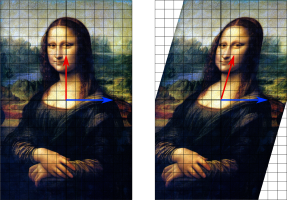
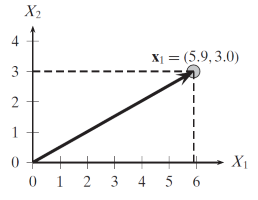

I. Goodfellow, Y. Bengio and A. Courville, ch. 2:
Deep Learning, MIT Press, 2016.
J. Lescovec, A. Rajaraman, J. Ullmann, ch. 11:
If, given a matrix \(A\) we find a scalar \(\lambda\) and a vector \(\vec{e}\) s.t.
\[A\vec{e} = \lambda \vec{e}\]
then \(\lambda\) and \(\vec{e}\) will be an eigenpair of A.
If \(rank(A)=n\) then there could be up to \(n\) such pairs.
In practice, eigenpairs
are always costly to find.
they might have \(\lambda=0\): no information, or
\(\lambda\) might not be a real number: no interpretation.
A square matrix \(A\) is called positive semidefinite when for any \(\vec{x}\) we have
\[\vec{x}^T A \vec{x} \ge 0\]
In such case its eigenvalues are non-negative: \(\lambda_i\ge 0\).
In Geometry, applying a matrix to a vector, \(A\vec{x}\), creates all sorts of alteration to the space, e.g,
rotation
deformation
Eigenvectors, i.e., solutions to \(A\vec{e} = \lambda \vec{e}\)
describe the direction along which matrix A operates an expansion
deforms a vector by increading the first dimension by a quantity proportional to the value of the second dimension:
\[ \begin{bmatrix} x\\ y \end{bmatrix} \longrightarrow \begin{bmatrix} x + \frac{3}{11}y\\ y \end{bmatrix} \]
The blue line is unchanged:
an \([x, 0]^T\) eigenvector
corresponding to \(\lambda=1\)
Under certains conditions:
-the eigenpairs exists,
-e-values are real, non-negative numbers (0 is ok), and
-e-vectors are orthogonal with each other:
User-activity matrices normally meet those conditions!
If an activity matrix has good eigenpairs,
each e-vector represents a direction
we interpret those directions as topics that hidden (latent) within the data.
e-values expand one’s affiliation to a specific topic.
Pythagora’s theorem, essentially.
\(||\vec{x}|| = \sqrt{\vec{x}^T\vec{x}} = \sqrt{\sum_{i=1}^m x_i^2}\)

Generalisation:
\(||\vec{x}||_p = (|x_1|^p + |x_1|^p + \dots |x_m|^p)^\frac{1}{p} = (\sum_{i=1}^m |x_i|^p)^\frac{1}{p}\)
The Frobenius norm \(||\cdot ||_F\) extends \(||\cdot ||_2\) to matrices:
\(||\vec{A}||_F = \sqrt{\sum_{i=1}^m \sum_{j=1}^n |a_{ij}|^2}\)
Also used in practice:
\(||\vec{x}||_0\) = # of non-zero scalar values in \(\vec{x}\)
\(||\vec{x}||_\infty = max\{|x_{i}|\}\)
The unit or normalized vector of \(\vec{x}\)
\[ \vec{u} = \frac{\vec{x}}{||\vec{x}||} = (\frac{1}{||\vec{x}||})\vec{x} \]
\(\vec{u}\) has the same direction of the original
its norm is constructed to be 1.
\[ M\vec{e} = \lambda \vec{e} \]
Handbook solution: solve the equivalent system
\[ (M - \lambda I)\vec{e} = \vec{0} \]
Either of the two factors should be 0. Hence, a non-zero vector e is associated to a solution of
\[ |M - \lambda I| = 0 \]
\[ |M - \lambda I| = 0 \]
In Numerical Analysis many methods are available.
Their general algorithmic structure:
-find the \(\lambda\)s that make \(|\dots | = 0\), then
-for each \(\lambda\) find its associated vector e.
At the scale of the Web, few methods will still work!
Ideas:
find the e-vectors first, with an iterated method.
interleave iteration with control on the expansion in value
\(\vec{x_0} = [1, 1, \dots 1]^T\)
\(\vec{x_{k+1}} = \frac{M\vec{x}_k}{||M\vec{x}_k||}\)
until an approximate fix point: \(x_{l+1} \approx x_{l}\).
Now, eliminate the contribution of the first eigenpair:
\[ M^* = M - \lambda_1^\prime \vec{x}_1 \vec{x}_1^T \]
(since \(\vec{x}_1\) is a column vector, \(\vec{x}_1^T \vec{x}_1\) will be a scalar: its norm. Vice versa, \(\vec{x}_1 \vec{x}_1^T\) will be a matrix)
Now, we repeat the iteration on \(M^*\) to find the second eigenpair.
Times are in \(\Theta(dn^2)\).
For better scalability, we will cover Pagerank later.
def find_eigenpairs(mat):
"""Test the quality of Numpy eigenpairs"""
n = len(mat)
# is it squared?
m = len(mat[0])
if n==m:
eig_vals, eig_vects = la.eig(mat)
else:
# force to be squared
eig_vals, eig_vects = la.eig(mat@mat.T)
# they come in ascending order, take the last one on the right
dominant_eig = abs(eig_vals[-1])
return dominant_eigE-values come normalized: \(\sqrt{\lambda_1^2 + \dots \lambda_n^2} = 1\); hence we later multiply them by \(\frac{1}{\sqrt{n}}\)